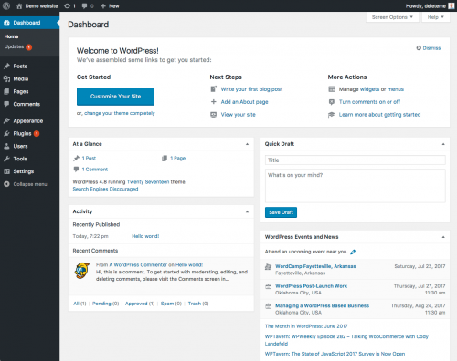
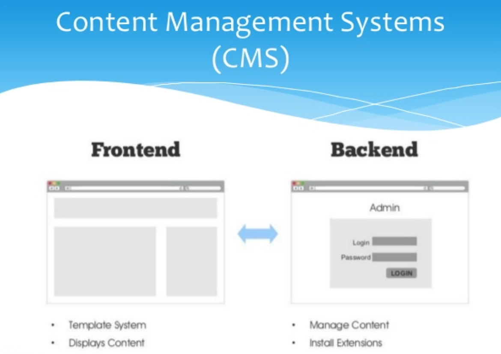
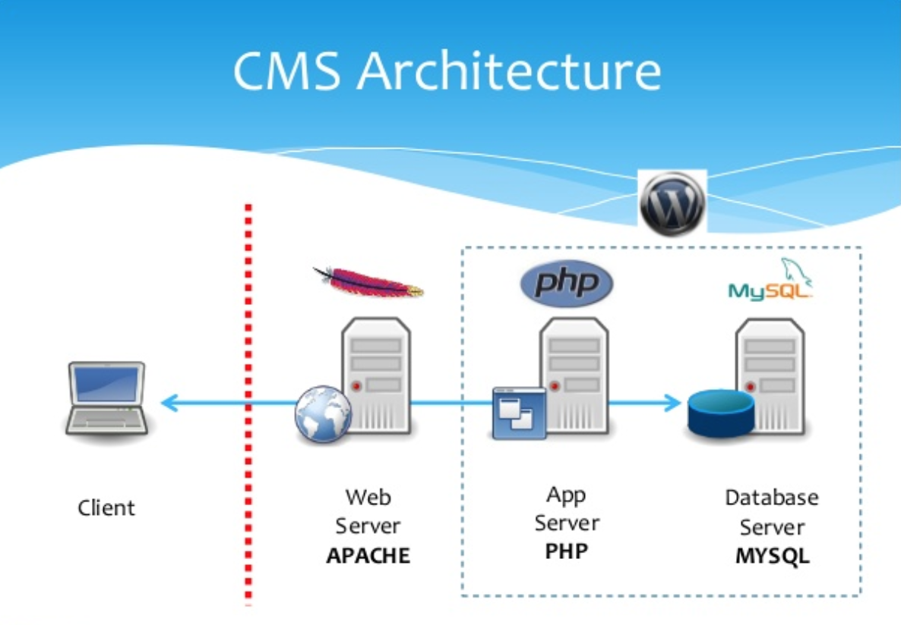
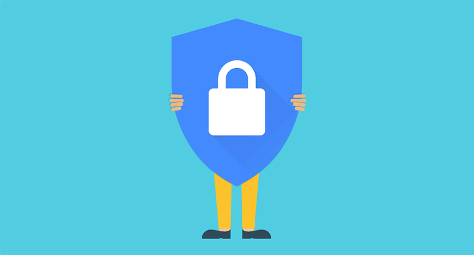

Wordpress
What is WordPress?
Official description from WordPress.org
WordPress is web software you can use to create a beautiful website or blog. We like to say that WordPress is both free and priceless at the same time.
Why are we learning it?
- WordPress is the #1 content management system in the world (59.5% marketshare).
- WordPress is used by 28.6% of the sites on the web.
- WordPress 4.8 has been downloaded over 30,332,145 times
WordPress is free, open source, web-based software
WordPress core software is built by hundreds of community volunteers. People all around the word contribute to WordPress by either submitting bugfixes, testing, designing or writing code for the software.
WordPress is website building framework
WordPress is a platform for building and designing a website.

Wordpress: The Three Components
- Server-side code (PHP) and Database (mySQL)
- Content Management System and Dashboard
- Access to Themes and Plugins
What is a content management system?
A program that allows site owners to manage their site content via an easy-to-use admin or dashboard.
CMS
CMS
WordPress.org vs. WordPress.com
- WordPress.org - Web software used to build a website on a hosting account with a domain name. Sites can be built and modified using themes, plugins or custom code
- WordPress.com - A free blogging service that allows people to create a blog hosted on WordPress.com's servers. Hosting is free (although there are some for-pay add-ons), theme choices are limited, plugins can not be installed and code can not be modified
Local Install
What Is Needed For Setting Up Your Local Environment
- A Web browser. Installation is performed step-by-step on a web browser
- MAMP (an application you download) to run the server on your local computer
- The Wordpress code starter files
Directions!
Google Doc HereSecurity
Being popular means you're a target
It is important to take security seriously when running a site that uses a CMS.
Security
During install
- Make your database table prefix unique. Don't use "wp_" or "wordpress_"
- Create a new database user, don't use the default
- Make your database user password strong.
- Do not use "admin" as a username. "admin" used to be the default WordPress username. Use a unique username and a very strong Password
A Tour of the Front End
WordPress comes with the default theme Twenty Seventeen
- A sample post on the home page.
- A sample page
- A sample comment
- A sample tag line "Just another WordPress site"
- A set of sidebar widgets
A Tour of the Backend Admin
Located at: yourdomain.com/wp-admin/
The admin is divided into 3 areas:
- The top menu bar
- The left-hand menu used to navigate to most admin functionality
- The main content window where most admin functionality is performed
A Tour of the Backend Admin
Tip: Open the front end of your site in one browser tab and the backend in another so you can easily switch between the 2 as you make changes to your site.
Setting Up Your Site
The Settings menu
- General: Title, tagline, site address, date format, etc.
- Writing: Post-related settings
- Reading: Set site home page, # of posts, rss settings and search engine visibility
- Discussion: Manage comment settings
- Media: Make default image sizes and other media settings
- Permalinks: Define the structure of site URLs
Exercise time!
Some tasks to get you familiar with the Settings menu and dashboard
- Change the name of your site
- Change the "Front page" of your site to the sample page
- Change the Permalinks of yout page to be set by the Posts
Changing Site Appearance
The Appearance menu
- Themes: Manage the current theme in use and other installed themes
- Widgets: Manage widgets you can add to site sidebars or other "widgetized" areas
- Menus: Manage navigation menus
- Header: Manage header text and image
- Background: Manage background color and image
- Editor: Dangerous way to edit theme and plugin flies. This is disabled if you "harden" WordPress
Adding Content
Pages and Posts
- Pages: Regular static website pages with content
- Posts: Entries (like blog posts) that have a date, categories and tags assigned to them. They can be listed in a particular order (chronologically, alphabetically, etc.) and fed to other sites or blog readers via an RSS feed
Tour of Pages
- Publish Change publish status and visibility settings and view revisions
- Page Attributes: Assign a page "parent", choose template and sort order
- Featured Image: Assign an image to page (requires theme support)
Managing Menus
Appearance > Menus
Easily create and manage navigation menus
- Create menus: Enter a menu name and click "Create Menu"
- Order Pages: Drag and drop your pages menu items in the desired order. Indent pages to make them children of other pages
Moving right along...
What are Plugins?
Official description from WordPress.org
Plugins can extend WordPress to do almost anything you can imagine.
Plugins are Powerful
Plugins are used to add functionality to WordPress. Examples include ecommerce, SEO, forms, photo galleries, social media sharing, forums and much more!
Plugins are often free
Right now there are 52,108 free plugins in the official WordPress Plugin Directory.
Plugins
Plugins menu
WordPress comes with 2 plugins:
- Akismet: Protects your blog from comment and trackback spam. This plugin requires an Akismet key
- Hello Dolly: Adds a random lyric from "Hello Dolly" to the upper right-hand corner of admin screen.
Plugins
Managing Plugins
- Activate/Deactivate: Turns plugins "on" and "off"
- Edit: Ability to edit plugin files NOT RECOMMENDED
- Delete: Delete deactivated plugins
Plugins
Finding plugins
- Searching under Plugins > Add New
- Browsing the WordPress Plugin Directory
Plugins
Usage tip
Plugins often use shortcodes to add content to a page or post.
For example, the plugin Contact Form 7 uses the shortcode [contact-form-7 id="105"] (the ID is the ID of the form) to allow you a form to a page or post.
Plugins
Security tip - Vet plugins first
- Ratings Read the plugin reviews
- Maintenance Check to see it the plugin has regular updates
- Support See if the plugin developers regularly answer support questions
Top Free Plugins
Favorite Free plugins
- WordPress SEO by Yoast: SEO plugin for WordPress
- Contact Form 7: Used to make simple contact forms
- Seamless Donation: PayPal plugin
Top Premium Plugins
Favorite For-pay plugins
- Gravity Forms: A very powerful and feature-rich forms builder
- Backup Buddy: Easily backup, restore and migrate a WordPress site
What are Themes?
Official description from WordPress.org
Fundamentally, the WordPress Theme system is a way to manage the look of your website. WordPress Themes can provide much more control over the look and presentation of the material on your website.
Themes are Powerful
A theme not only determines how a site looks, it can also add functionality. There are themes that can turn a WordPress site into an online store, an art portfolio and more.
Themes are often free
Right now there are over 2,643 free themes in the official WordPress Themes Directory.
Managing Themes
Appearance > Themes
WordPress currently comes with 2 themes: Twenty Seventeen and Twenty Sixteen.
Under Appearance > Themes is a list of all installed themes. The theme in use is labeled "Active."
Themes
Finding new themes
- Searching under the "Add Themes" tab
- Browsing the WordPress Themes Directory
Our Theme
X ThemeA look at the:
- Stacks
- Extensions (like Custom Plugins)
- Cornerstone
- Demos
Adding X
Google Doc HereChanging Site Appearance
The Customizer
Make customizations to your site's appearance and preview them in real time before making them live.
Cornerstone!
Where you will spend more of your time
Let's make a website.
Where to go from here?
Front-End Developers
Folks with a HTML/CSS skill set can customize or build their own WordPress themes.
- WordPress Courses - Carrie Dils
- Building Themes from Scratch Using Underscores Morten Rand-Hendriksen
Where to go from here?
Web programmers
Folks with PHP/MySQL/JavaScript skill set can build WordPress plugins.
- JavaScript for WordPress Master Course Zac Gordon
- Learn Plugin Development - Pippin Williamson
THE END
Thank you for your attention!